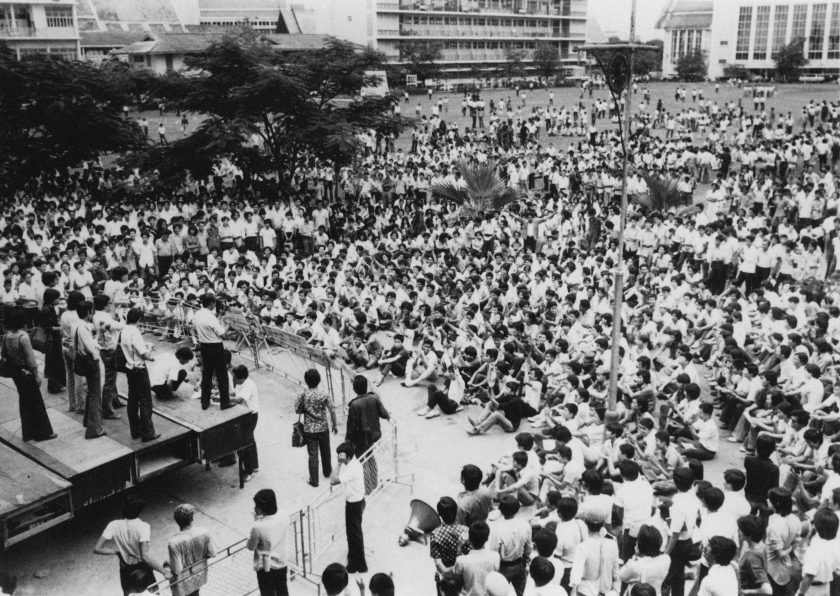

สภาพการณ์ทางการเมืองไทย หลังกรณี 14 ตุลาฯ

กรณี 6 ตุลาคม 2519 เกิดขึ้นได้อย่างไรนั้น ก่อนอื่นคงต้องเริ่มต้นจากกรณี 14 ตุลาคม 2516 เหตุการณ์ครั้งนั้น นับเป็นครั้งแรกที่นักศึกษาและประชาชนที่ปราศจากอาวุธ และไม่เคยมีส่วนร่วมทางการเมือง ได้ลุกฮือขึ้นสู้ต่อสู้ จนกระทั่งสามารถโค่นรัฐบาลเผด็จการ ที่นำโดยสถาบันทหารและระบบราชการลงได้ หลังจากที่ระบอบนี้ครอบงำการเมืองไทยอยู่นานถึง 16 ปีนับตั้งแต่การยึดอำนาจของจอมพลสฤษดิ์ ธนะรัชต์ เมื่อเดือนตุลาคม 2501 การเปลี่ยนแปลงเริ่มตั้งแต่เมื่อเกิดความรุนแรงในเช้าวันที่ 14 ตุลาคม จากการเกิดเหตุปะทะของนักศึกษาประชาชนและเจ้าหน้าที่ตำรวจทหาร จากนั้นการต่อสู้ของฝ่ายประชาชนลุกลาม จนทำให้รัฐบาลไม่อาจควบคุมสถานการณ์ไว้ได้ ในที่สุด จอมพลถนอม กิตติขจร ต้องประกาศลาออกจากตำแหน่งนายกรัฐมนตรีในเวลาเย็นวันที่ 14 ตุลาคม 2516 นั้นเอง จากนั้น พระบาทสมเด็จพระเจ้าอยู่หัวได้ประกาศตั้งนายสัญญา ธรรมศักดิ์ อธิการบดีมหาวิทยาลัยธรรมศาสตร์ เป็นนายกรัฐมนตรี เหตุการณ์จึงได้กลับคืนสู่สภาพปกติในวันที่ 15 ตุลาคม หลังจากที่อดีตผู้นำ 3 คน คือ จอมพลถนอม กิตติขจร จอมพลประภาส จารุเสถียร และพ.อ.ณรงค์ กิตติขจร ได้เดินทางหนีออกจากประเทศ
แม้ว่าจะประกาศเป็นรัฐบาลรักษาการ แต่นายสัญญา ธรรมศักดิ์ได้เปลี่ยนภาพลักษณ์ของการบริหารประเทศไปไม่น้อย จากการตั้งคณะรัฐบาลที่มีพลเรือนเป็นส่วนข้างมาก คือ 19 คน โดยมีตำรวจและทหารเพียง 5 คน ซึ่งส่วนมากดำรงตำแหน่งในส่วนกลาโหมและมหาดไทย ซึ่งเป็นครั้งแรกนับตั้งแต่การรัฐประหารเดือนพฤศจิกายน 2494 เป็นต้นมา ที่คณะบริหารมีสัดส่วนของพลเรือนมากเช่นนี้ จากนั้น คณะกรรมการตรวจสอบและติดตามผลการปฏิบัติราชการ (กตป.) ซึ่งแต่เดิม มี พ.อ.ณรงค์ กิตติขจร เป็นเลขาธิการ ถูกยกเลิก นายสัญญา ธรรมศักดิ์ ได้ประกาศว่าจะปกครองประเทศด้วยระบอบประชาธิปไตย จะให้เสรีภาพแก่ประชาชนอย่างเต็มที่ พยายามที่จะแสดงความใกล้ชิดกับประชาชนโดยการออกรายการโทรทัศน์ที่ชื่อว่า “พบประชาชน” เป็นระยะๆ เพื่อแสดงให้เห็นว่า รัฐบาลมิได้บริหารประเทศโดยพลการดังที่ผ่านมา นอกจากนี้ นายกรัฐมนตรี ก็ยังให้สัญญาที่จะแก้ปัญหาของประเทศในหลายด้าน โดยเฉพาะอย่างยิ่ง ปัญหาเงินเฟ้อ ปัญหาความเดือดร้อนของชาวนา ปัญหาความยากจนของประชาชน เป็นต้น และสัญญาว่าจะดำเนินการให้ประเทศเป็นประชาธิปไตยโดยเร็ว และให้มีการสอบสวนคดีสังหารหมู่ในวันที่ 14 ตุลาคม 2516 ส่วน พล.อ.กฤษณ์ สีวะรา ผู้บัญชาการทหารบก ก็ได้เสนอเรื่องให้มีการยกเลิกการพระราชทานยศจอมพลแก่นายทหาร ทำให้ยศจอมพลสิ้นสุดลง
อย่างไรก็ตาม รัฐบาลก็ประสบวิกฤตอย่างหนัก เพราะปัญหาหลายด้านรุมเร้า ส่วนหนึ่งมาจากวิกฤตเศรษฐกิจที่รุนแรงมากยิ่งขึ้น อันเนื่องจากวิกฤตการณ์น้ำมันในตลาดโลก ซึ่งเกิดขึ้นใน พ.ศ.2517 ทำให้รัฐบาลต้องขึ้นราคาน้ำมันภายในประเทศ ซึ่งส่งผลกระทบอย่างมากต่อราคาสินค้าอุปโภคบริโภค ทำให้ประชาชนเดือดร้อนมากขึ้น นอกจากนี้ก็คือการเผชิญกับกระแสการตื่นตัวของประชาชน ทำให้เกิดการประท้วงจากประชาชนส่วนต่างๆ ที่ไม่ได้รับความเป็นธรรม จนรัฐบาลไม่อาจจะแก้ปัญหาได้ การควบคุมเสถียรภาพทางการเมืองก็ทำได้ยาก ดังนั้น ในวันที่ 21 พฤษภาคม 2517 นายกรัฐมนตรี สัญญา ธรรมศักดิ์ จึงลาออกจากตำแหน่ง แต่ก็ได้รับการแต่งตั้งกลับมาใหม่ และบริหารประเทศต่อมาอีก 9 เดือน หลังจากที่ได้มีการพระราชทานรัฐธรรมนูญฉบับใหม่ในวันที่ 7 ตุลาคม 2517 และให้มีการเลือกตั้งใหม่ในวันที่ 26 มกราคม 2518 ซึ่งพรรคประชาธิปัตย์ได้คะแนนเสียงมากที่สุด ดังนั้น ม.ร.ว.เสนีย์ ปราโมช หัวหน้าพรรค จึงได้รับตำแหน่งนายกรัฐมนตรีคนใหม่ เมื่อวันที่ 15 กุมภาพันธ์ และได้มีการตั้งรัฐบาล 2 พรรคระหว่างพรรคประชาธิปัตย์และเกษตรสังคม แต่ปรากฏว่าในวันแถลงนโยบาย สภาลงมติไม่รับรองนโยบายรัฐบาล ม.ร.ว.เสนีย์ ปราโมช จึงต้องลาออกจากตำแหน่ง และ ม.ร.ว.คึกฤทธิ์ ปราโมช หัวหน้าพรรคกิจสังคม ได้รวบรวมเสียงพรรคต่างๆ 12 พรรคมาสนับสนุนจนมากเพียงพอ จึงได้เข้ารับตำแหน่งนายกรัฐมนตรีแทน ม.ร.ว.คึกฤทธิ์ได้แถลงนโยบายหลักคือ การผันเงินสู่ชนบท สงเคราะห์ผู้มีรายได้น้อยในกรุงเทพฯ ให้ขึ้นรถเมล์ฟรี รักษาพยาบาลฟรี และวางนโยบายต่างประเทศให้สหรัฐฯ ถอนทหารจากประเทศไทย รัฐบาลชุดนี้ได้รับการรับรองจากสภาผู้แทนราษฎรเมื่อวันที่ 20 มีนาคม 2518
รัฐบาลของม.ร.ว.คึกฤทธิ์ ปราโมช บริหารประเทศต่อจากนั้นมาได้นาน 10 เดือน ก็เกิดวิกฤตการณ์อย่างหนักในคณะรัฐบาล หลังจากที่นายกรัฐมนตรีพยายามจะดึงพรรคเกษตรสังคมมาเข้าร่วมรัฐบาล แต่กลับก่อให้เกิดความแตกแยกอย่างมากในหมู่พรรคร่วมรัฐบาลพรรคอื่น ม.ร.ว.คึกฤทธิ์จึงได้ประกาศยุบสภาผู้แทนราษฏรในวันที่ 12 มกราคม 2519 และประกาศให้มีการเลือกตั้งใหม่ในวันที่ 4 เมษายน 2519 ซึ่งในการเลือกตั้งครั้งนี้พรรคประชาธิปัตย์ได้รับชัยชนะด้วยเสียงมากที่สุด แม้กระทั่ง ม.ร.ว.คึกฤทธิ์ ปราโมช นายกรัฐมนตรี ก็พ่ายแพ้ในการเลือกตั้งที่เขตดุสิต กรุงเทพมหานคร ดังนั้น ม.ร.ว.เสนีย์ ปราโมช หัวหน้าพรรคประชาธิปัตย์ จึงกลับมารับตำแหน่งนายกรัฐมนตรี และตั้งรัฐบาลผสม 4 พรรค คือ พรรคประชาธิปัตย์เป็นแกนนำร่วมกับพรรคชาติไทย ที่นำโดย พล.ต.ประมาณ อดิเรกสาร พรรคธรรมสังคม นำโดย พล.อ.อ.ทวี จุลละทรัพย์ และ พรรคสังคมชาตินิยม นำโดย นายประสิทธิ์ กาญจนวัฒน์ รัฐบาลชุดนี้ บริหารประเทศมาจนถึงเมื่อเกิดเหตุการณ์วันที่ 6 ตุลาคม 2519 จึงสิ้นสภาพอย่างเป็นทางการ ด้วยการรัฐประหารของฝ่ายทหา